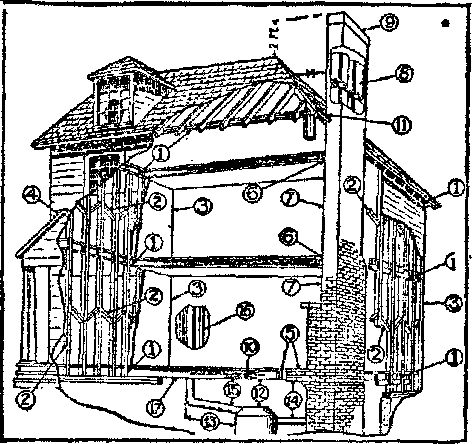

Labob and Economics
A Nation of Ftbe-Wobshlpkes......... E5T9
Fires In Fire-proof Buildings ............. . 582
Fires In Public Buildings . . .
Social and Educational
Travel and Miscellany
The Bible on Temperature............., . 593
Edcnic Conditions to be Restored .............
Religion and Philosophy
Tee Gulden Aob Coming into Finland
Various Beliefs concerning Christ .
( Worldly Wisdom Self-deceived ...
Babylon Is Falling ..........., . 604
! Many False Teachers ............ , 605
Published every other Wednesday at 18 Concord Street, Brooklyn, N. Y., U. S. A., by WOODWORTH, HUDGINGS * MARTIN
Copartners and Proprietors Address: 18 Concord Street, Brooklyn, N. Y,t u. jff. A. CLAYTON J. WOODWORTH . . , Editor ROBERT J. MARTIN . Business Manage C. E. STEWART .... Assistant Editor WM. F. HUDGINGS . . Sec’y and Treas. Fivu Cents a Copt—51.00 a Ybab Makb Remittances ioTHE COBDEN AG® Fosejgw Offices ; British.....34 Craven Terrace, Lancaster Gate, London W. 2
Canadian ........ 270 Dundas Street W.. Toronto, Ontario Australasian.......495 Collins Street, Melbourne, Australia
South African......6 Lelle Street, Cape Town, South Africa
Entered as second-class matter at Brooklyn, N. Y., under the Act of March S, 1879
V«Imne IV Brooklyn, N. Y., Wednesday, June 20, 1923 Nunribw 93
A Nation, of Fire-Worshipers
TV/T ORE than any other people, the inhabitants of the United States and Canada can lay claim to being fire-worshipers; for their losses by preventable fires are much greater in proportion to population than those of other countries. Canada is even a little worse than the United States, or at any rate is worse in some years; but the losses in the United States are bo huge, and the data on the subject so explicit, that we give most attention to the United States in considering the subject.
There is a fire in America on the average of one a minute, day and night, the year around. These fires are destroying property at the rate of about $700 per minute, day and night, from one year’s end to the next, or at the rate of about one million dollars per day. Three-fourths of all the fires are a total loss, and ninety-two percent of them are due to carelessness.
In no other country is there such a general disregard of the common safety, yet in no other country do the people need to be so careful. In the first place the United States uses more wood in building than do other peoples (with the exception of Canada), builds less substantially and builds higher; and in the second place it is the largest per-capita user of liquids of high volatility, and this increases the fire hazard tremendously.
Since the year 1910 the average annual fireloss in the United States has been $242,201,600, while the average annual value of new buildings has been $914,376,500, showing that about one-fourth of all the great sum annually expended for new buildings is sacrificed to the fire god, the god of carelessness as respects electricity, matches, smoking materials, and defective chimneys and flues. This is a matter to which the people of the United States ought to give attention; for whatever is destroyed by t fire increases the cost of living for us all.
The way this distribution of loss takes place is through the insurance companies. The higher the insurance rates the higher the prices that must be charged for everything covered by them; and as practically everything in America is of necessity covered by insurance, up and up go the prices.
As an illustration of the greater carelessness in America: Boston, which is smaller in population than Glasgow, has an annual fire-loss six times as large; while Chicago, of the same size as Berlin, has an annual fire-loss seventeen times as large. This is not wholly due to carelessness, however, as building conditions and extremely hot, dry weather have something to do with the matter. America has its good spots, at certain seasons. In May, 1922, during one consecutive period of ten hours there was not a fire-alarm in the entire city of Philadelphia. This is a good record for a city with one and one-half million people.
IN THE United States the average family runs one chance in sixty of being burned out each year; hence each adult is liable to have this experience once in his lifetime, and it is not a pleasant experience. Sixty-five percent of all the fires are in dwellings; there are 889 homes burned each working day. The saddest part of it is that during the year 1921 there were 15,219 persons burned to death, eighty-two percent of them being mothers and children under school age. In the property loss in homes fully twenty-five percent consists of heirlooms, works of art, rare books, antiques, rugs and tapestries, the value of which cannot be estimated in dollars and cents.
One of the most prolific sources of fires in homes is the overheated electric flat-iron. It is so easy to respond to a call at the door or to the needs of a child, and to forget to turn off the current before the iron has set fire to the ironing board, and the ironing board has set
C80
QOLDEN'AQE
fire to the house. In New York City in 1921 there were fifty-two fires due to overheated electric irons coming in contact with inflammable material. The average loss on these fires was over $4,000.
Many fires are caused by rubber hose connections on gas stoves; many also by swinging gas jets coming in contact with curtains. Metal guards should be placed under and around gas and coal stoves; stopcocks should be placed at gas fixture and not merely at gas iron; rubber hose gas-connections should be replaced with metal connections; swinging gas-brackets should be replaced with stationary ones and provided with wire guards or glass globes.
Kerosene causes many fires. In Detroit, a little over a year ago, a woman who was trying to start a fire with kerosene seriously burned herself, reduced her home to ashes and burned to death her husband, her four children, a friend who was visiting her at the time, and the three children of her friend. Kerosene should not be used to start fires; kerosene lamps should not be filled while lighted; and kerosene should not be kept in a warm room.
Matches cause many fires. A little nine-year-old lad at 'Jamesburg, N. J., at Christmas time disobeyed instructions and peeped into a closet where his forthcoming gifts were stored. He lighted a match to assist his investigations, arid then hastened down stairs so that his absence would not be detected. In a few minutes everything in the closet—his Christmas presents, his parents’ clothing, and a roll of bills containing $485 belonging to his father—had gone up in smoke. When rats get into a home they frequently start fires by gnawing at match-boxes to get the paste on the box labels. Matches should be kept in metal boxes, away from heat and out of reach of children. Lighted matches should not be used when one is entering dark rooms.
Candles cause many fires. In New York, at the beginning of the rental season an intelligent woman, well connected socially, was rejoiced at finding a new and satisfactory apartment. In placing things to rights she overworked, fell asleep in a chair, her candle overturned, and burned herself and her two small cliildren to death. The building was a new one, not yet ready for tenancy, neither gas nor electric lights having been installed. Candles should
Bmooxltm,K. & t .
? ' -x
not be used on Christmas trees, and lighted candles should not be used when entering bedrooms, cellars, attics, or dark closets. s
Hot ashes cause many fires. They should not be put into wooden boxes or wooden barrel*. A fire-screen should always be used for an open fire, as both coal and wood crackle and may at any moment send out sparks. Chimneys built without flue-lining are unsafe and should be taken down. Chimney holes should be kept • closed, and chimneys and stovepipes should be frequently cleaned so that the soot which they contain will not take fire. Chimneys are sometimes built of only one thickness of brick, and those bricks are placed on edge. Such building is criminal. The rusting through of smoke pipes is responsible for the annual loss of millions of dollars worth of property and thou- j sands of lives. Furnace-flues should be taken . Sown every summer, so that they will not rust ! out. - j
Rags saturated with oil and put into a hot, j Bry, confined place will burst into flames in a | short time. They should be destroyed, or ’’ spread out where the air can get at them all r? over, or confined in covered metal receptacles. J Inflammable fluids used for cleaning should not be used near an open flame. Gasoline used for : cleaning gloves causes many fires. ;
Other causes for fires are numerous. Cook- ’ stoves should be kept dean; for if they are >
allowed to get covered with grease it may take j
fire when least expected. Fat boiling over on the stove is another common cause of fires. j Looking for gas-leaks with a torch, thawing out ; pipes, allowing do thing or other inflammable 5 material too near to hot stoves, defective fire- ; less cookers, incubators, fireworks, and accumulations of rubbish in basements—all these ; are food for the fire-fiend. ‘
Most fires are the same size at the start. U : attacked by a determined person With a wet k broom or with a pail of water and a dipper or with a fire-extinguisher, they can often be put . out with little or no fire, water, or smoke dam- J age. Every housekeeper should know the looa- ’ tion of the nearest fire-alarm station and how -to send in an alarm.
In the effort to cut down the ninety-two pencent of fires caused by carelessness, in 1922 th* boys and girls of New York city were awardw|^| 202 medals for the beat essays on fire proven- -d
tion. It was a good investment, and a good way y to give publicity to a highly important subject.
It is believed that the appalling loss of life from tenement fires in New York city could almost all be stopped if the Trinity Church corporation, and other great and selfish landlords worth millions of dollars, would install a one and one-half-inch supply pipe to a sprinkler head on each floor in hallways and dumb waiters and a fifty-foot hose on each floor, so that occupants of the building could use it in extinguishing fires.
THE fire set by Nero in Rome in A. D. 64 burned for eight days before it burned itself out. The great fire of London raged four days, consumed 13,200 houses, rendered 100,000 persons homeless, and obliterated the London of Shakespeare’s plays. But this was not a bad thing, in a way,* for the old London, like other old cities of the time, had no raised sidewalks, and an open sluice ran down the center of the street in which the householders threw kitchen water, refuse and garbage, where it accumulated until carried away by showers or scavengers. In order to reach their homes many citizens had to pass through filth ankle-deep. The old London was like the modern New York, so crowded that numbers of people had to live in cellar rooms. One house of ten rooms is known to have sheltered ten families, and some of the families kept lodgers besides.
Nearly every great city has been visited by disastrous fires. But some of the most noteworthy are the burning of Moscow, set by the citizens themselves, September 14, 1812, as a rebuke to Napoleon, in which 30,000 homes were burned; the New York fire, December 16, 1835, which burned down 693 buildings; the Chicago fire, October 7,1871, which burned down 16,950 buildings; the Boston fire, November 9, 1872, which burned down 776 buildings; the Baltimore fire, February 7,1904, which burned down 2,500 buildings; the Chelsea fire, April 12, 1908, which burned down 700 buildings, and the great San Francisco disaster, 1906, which devastated the business district, inflicting a $350,000,000 loss.
In its recent fire-records Japan bids fair to emulate the United States. In the month begin-,ning March 27, 1921, in three different sections of the empire, there were fires destroying 1^000, 1,700 and 4,000 houses, respectively. At tha greatest of these fires, the one at Tokio, it looked for a time as if the whole city waa doomed; and it probably would have been had not the wind, which was driving the flames toward the heart of the city, suddenly died down; as it was, the police had to tear down a ring of houses around the burning area in order to arrest the flames. Japanese houses are flimsy structures in the construction of which paper plays a great part.
The World’s Sunday School Convention had a narrow escape. The building in Tokio in which the convention was to be held was burned just before the formal opening of the convention. The building was crowded with delegates at the time, but all escaped.
The most recent largo conflagration in America was that at Worcester, Massachusetts, in January 1921, during which fifty or more buildings were destroyed on a day when the mercury was down to zero. The fire spread so rapidly that some of the fire-fighting apparatus itself was caught and had to be abandoned.
New York is always having fires, 8,700 a year on the average; but it claims the best fire department in the world and the fires seldom get out of hand. One of the most serious of recent fires was the burning of the beach resort at Arverne, Rockaway; another was the obliteration of a five-acre asphalt plant, when thirty-four tanks of gasoline exploded and a thirty-six-hour conflagration resulted. Philadelphia had a similar fire in August, 1921, when ten great oil tanks exploded, killing four men and destroying property worth $1,000,000.
ABOUT forty percent of all conflagrations have resulted from sparks and flaming embers carried by high winds to the roofs of nearby buildings. In the year 1922, in Indianapolis, out of 1,199 fires 850 were chargeable to inflammable roofing; and the city has passed an ordinance requiring all shingle roofs to be replaced within the next eight years. Out of thirty fires in Wabash, Indiana, twenty-five were traced to this same cause.
Many years ago the butts of shingles were about an inch thick; modern shingles are sawn so thin that under a hot sun they become like
tinder, requiring only a spark to ignite. Slate, metal, and tile roofs are good as fire preventers; but they are mostly heavy and expensive.
One of the best roof-coverings, aside from actual fire-proof materials, is the asphalt shingle, which is about the same weight as ordinary shirfgles, and much less inflammable. The asphalt shingles are made of felt saturated with asphalt and are surfaced with a heavier coat of asphalt into which is rolled crushed mineral matter. These shingles are to be had in at least four different colors and are very attractive in appearance.
The "American Contractor" has made a study of the things that can be done in the building of an ordinary wooden house which, without greatly adding to its cost, will assist materially in its safety from point of view of a possible fire. We give the list, with its accompanying illustration:
(1) Fire stopping of all intersections of walls and partitions with floors, ceilings and roof.
(2) Herring bone fire stopping in partitions midway between floor levels.
(3) Partition and wall corners framed solid.
(4) Wall between porch attic, and house sheathed ■olid.
(5) Header beams 20 inches from the fireplace breast. Incombustible hearth.
,(6) Wood members 2 inches from chimney, space between filled with loose incombustible material.
(7) Plaster applied directly to chimney breast.
(8) Flue lining in chimney.
(9) Top of chimney 2 feet above peak of roof.
(10) Protection over heating plant
(11) Hoof framing 2 inches from chimney, flashed,
permitting free movement of chimney. .
(12) Top of heating plant 15 inches from ceiling. ■ ■ 2
(13) Furnace 8 feet from warm air riser. i
(14) Smoke pipe ll'a times its diameter below th* .eg ceiling. is
(15) Heat pipes fl inches below ceiling.
(16) Doubled tin pipes, %-inch air space between | in partitions, kept 1 inch from all woodwork. Steam | and hot water pipes 1 inch from woodwork.
(17) Heat pipes running through floors, fire stopped fl with loose incombustible material. 1
In New York city there has been considerable | discussion of a plan requiring each building 3 larger than a fifteen-room twb-family house to ' j have an automatic valve for shutting off gas, | so designed that it can be shut off from inside 1 or outside of the building, or by contact with | fire. But this device has been objected to on | the ground that thieves might shut off the gas f from a house not wired for electricity, and might plunder the house at will. What a pity |
that the world is in such condition that meaa- 3
ures which it takes for its safety in one direo I tion become a danger in some other! I
Wood carefully painted with a solution of | silicate of soda will stand a long exposure to a f fierce flame without even charring, and it would | be well to apply a coat of this to surfaces of |
wood which are relatively near to furnaces or j
stoves. '1
- -a
-J
Fires in Fire-proof Buildings
AT A fire in Chicago, in March, 1S22, ai % which 250 business firms were wiped out, j the heat was so intense that the windows of a . fifteen-story fire-proof building across the street melted and the entire contents of the building were destroyed, although the building itself ; stood.
Fire goes through a brick building with unprotected window-openings as easily as through : a wooden one. In all conflagrations in which flames go up against brick, stone, or concrete « buildings, the window frames ignite, the glass .. falls out and the story becomes a horizontal -flue through which the fiames lick up all combustible material. Metal window frames arid wired glass are as necessary as fire-proof walla and floors.
*« *>>*•» Tb QOLDEN aqe aa*
** In any fire-proof building, when the heat J becomes sufficiently intense, the iron pillars which support it melt or become incapable of carrying their loads. In such circumstances a cast-iron column, unprotected and unfilled, which will stand safe for twenty minutes, will stand ten minutes longer if the interior is filled with concrete. A structural steel column, protected by concrete, will stand for eight hours. Hollow tile protection for steel columns will enable the columns to stand fo- only three hours. In order to acquire this information a special building was constructed in Chicago in which heat of specified intensity could be applied to samples at the same time that they were subjected to pneumatic pressure equivalent to the weights they would be expected to carry in a building.
All high buildings now constructed in New York must have standpipes which extend from basement to roof and are capable of delivering water to the highest point at high pressure. Some buildings are so constructed that a water curtain can be thrown completely around the building from open nozzles extending from a pipe encircling the outer edge of the roof.
The conflagrations at Baltimore and San Francisco have shown that in a great fire the contents of fire-proof buildings go irresistibly. In San Francisco it was found that the contents of such buildings burned out at the rate of a story an hour. In the burning of any high building there is a funnel-shaped heat-wave which automatically burns all combustible material in surrounding high buildings, even though they may be several hundred feet away.
FIRES in factories are frequently accompanied with terrible loss of life; there should be fire escapes on all sides of factory buildings, with access to adjoining buildings. There should also be frequent fire-drills, and employes should be taught not to stop to get hats or coats.
Because of fires, production is hampered, contracts are cancelled, selling forces are laid off, and thousands of workers are compelled to move from one place to another. In some cases where factories have been destroyed by kfirc the owners have never been able to resume, although their business was in a flourishing condition when fire overtook it and wiped it out. At Wilmington, in December, 1920, a plant which had been idle for some time, and which normally employs 800 men, burned the day before it was to be reopened.
The causes of factory fires are numerous: Cigarettes, wood in close contact with steam pipes at seventy pounds or upwards pressure* spontaneous combustion from piles of greasy rags, pulleys and idlers permitted to run dry and hot, and spontaneous combustion from piles of soft coal, also explosions of dust particles in flour mills, sugar refineries, starch factories, and aluminum plants.
Many factories neglect fire protection almost completely, and pay little heed to the subject of fire-fighting. There is a lack of fire-extinguishers and fire hose, there are no plans for fighting a fire, there are no disaster signals, there is no fire inspection. In one instance a large concern bought an expensive forty-gallon chemical engine and kept it carefully housed in a heated building through an entire winter without knowing that the engine had never been filled with the charging solution and would therefore have been useless in case of a fire.
One of the best forms of inexpensive fire protection for factories is the keeping on hand of plenty of fire-buckets always filled with Abater. There should be one bucket for each five hundred square feet of floor area; and the buckets should hold not less than ten quarts each. For oil or grease fires the buckets should be filled with sand instead of water.
The proper way to form large piles of soft ooal is to drop the loads all at once upon the large pile, each time in a different place. The object of this is to avoid getting the large lumps all together with air-spaces between. It is these air-spaces that set the coal afire, when spontaneous combustion ignites the pile.
The courts formerly held that the obligation rested upon the tenant, not the landlord, to see that the laws regarding fire protection were complied with. Now this obligation is held to rest with the owner. He cannot put it off upon his tenant or tenants or upon the fire chief or the factory inspector. Moreover, his liability in case of fire extends not only to tenants and employes but to strangers who chance to be within the building at the time. The owner of the building is even responsible for the partial
Br complete blocking of means of exit by a tenant; and if in any way the owner has failed to provide the fire escapes required by law, he taay be sued by any person whose rights have thereby been infringed, and is responsible for Injury to them.
ACH week in the United States one hundred and forty flats, twenty-six hotels, twelve churches, ten schools, six apartment houses, three department stores, three public halls, three theaters, two prisons, two hospitals, two asylums and two colleges are destroyed by fire. Only five percent of the schools of the country are constructed entirely of fire-resisting materials, including walls, windows, doors and finish; forty-four percent of the school buildings are constructed of wood above the foundations and are veritable firetraps. Many times they are firetraps when not supposed to be such. At Collinwood, Ohio, several years ago, fire started from an unprotected steam main passing through the first floor, and one hundred and seventy-three school children were burned to Heath. The doors through which they were supposed to reach the street were made to swing inward instead of outward; and the little folks in their mad rush were piled in a great heap against them.
In Chicago, on December 30, 1903, a fire started in the wings of the Iroquois Theatre. Thinking that the blaze would be out in an instant, the attendants, instead of opening the exit doors, which also opened inward instead of outward, placed their backs against them and refused to permit egress until too late. When the rush for safety took place, the doors could not be opened at all; and 531 women and children were burned to death. One frail woman, who lost her reason momentarily while passing through the main exit, found herself in the street, and in her hand the complete sleeve of a man’s coat which in her frenzy, she had seized with such strength as to tear it completely from the body of the coat, not knowing what she did.
In New York harbor, in 1904, the picnic steamer General Slocum burned. The life-preservers were found filled with sawdust instead of cork, and one thousand women and children were burned to death or were drowned. In dry seasons fires occur almost daily on large bridges. Many steel bridges have been totally; destroyed, and have dropped into ruins as a result of their wooden floors burning. Of every, ?5 sixteen public institutions in the country one suffers a serious fire each year. Dried veneer -and panels constitute a tempting fire-trap in hotels and other similar structures.
In a business college in Butte City, Montana, there is still in daily use a building with six hundred boys and girls on the top floor. The only fire-escape is a straight ladder that no woman and few men could descend in a time of excitement; in the center of the building is an elevator shaft, which would make an ideal flue for a fire. Running around and around the elevator shaft is the main stairway, and their is no secondary stairway. This is a holocaust that has not yet occurred, but may at any time.
The Government is a loser by fire, the same ; as individuals. Not long ago fire and water1 destroyed almost all of the census department ; records. Another fire licked up an aviation property, including thirteen seaplanes, two ; hangars and other property of the value of a 1 million dollars. The roof of the Treasury wna ’ afire not long ago, and a $5,000 appropriation was made to turn the attic of the White House i from a fire-trap into a fairly safe place. In January, 1921, the capitol of West Virginia, at , Charleston, was destroyed, entailing a loss ofi two lives and $6,000,000 in property. i
IN A single small midwestern community, '
■within a period of sixteen days, twenty-one < children were burned to death in bonfires which i they had started among the leaves. The start- -ing of a bonfire in Alabama caused the destruo -tion of 191 buildings. In October, 1922, in . Haileybury, Ontario, a town of several thou- J sand inhabitants, a man built a bonfire of some j potato-tops and started a fire which burned the i entire village, causing the death of sixty per- 4 sons. In burning rubbish choose a calm1 day and a safe location for the fire. It is safer to 7 use an incinerator. ■’
If children will be allowed to play about bon-' . fires their garments can be inexpensively fire-' / proofed by immersion in a solution of ammonium sulphate. As soon as the cloth is dry it is fireproof; and the fireproofing solution doe* '
JVkb 20. 3023
, absolutely no harm to the fabric, being easily removed by washing. Ammonium sulphate is a soluble powder which may be purchased at small expense from any druggist.
Until recently, bonfires were frequent upon the streets of New York. The vendors in the markets were accustomed to destroy their rubbish by starting fires on the pavements. Upon a scrutiny of the matter, however, it was found that fires built in this way had damaged the city pavements to the extent of a hundred thousand dollars.
Bonfires built by campers are the principal cause of forest fires, aside from sparks from locomotives. The ashes of a camp fire should always be scattered with a stick, after the fire itself has been put out.
In the year 1811, in the Swiss Tyrol, forest fires caused the destruction of sixty-four villages. In the year 1871, fires in the pine forests of Wisconsin and Michigan caused the loss of a thousand lives and rendered fifteen thousand persons homeless. In September, 1894, there was a great forest fire in northern Minnesota, causing the loss of many lives. When fires start in a dry pine forest, they travel with the speed of an express train; and the only safety for any living thing in their path lies in immersion in water or in freshly-ploughed earth.
In April, 1922, New Jersey had one forest fire which destroyed three thousand acres of timber, and another covering an area of 125,000 acres. In the one case, government stores of hundreds of tons of T. N. T., the most powerful explosive known, were in immediate danger. In the other instance, the patients in a large tuberculosis sanitarium were barely saved.
Forest fires annually burn over 11,000,000 acres of land in the United States, and destroy enough timber to build a five-room frame house every one hundred feet on both sides of a road extending from New York to Chicago. Such a low of dwellings would house the entire population of Cincinnati, New Orleans, Minneapolis, Beattie, or Kansas City, Mo.
In very dry weather in the state of Washington automobiles fitted with flanged wheels, instead of rubber tires, follow the passage of every train through the timber district, putting put three to eight fires daily, started by sparks from the locomotives which have preceded them.
PHYSICIAN of Montreal is authority for the just-published statement that, at the present rate of increase, the whole world will be hopelessly insane in twenty-five years. One of the forms which this increased insanity takes is arson for excitement, pyromania.
In July, a year ago, a girl in Millis, Massachusetts, organized a band of boys and girls, and led them forth to burn her own town and the adjoining village of Medfield, her only reason being that the towns were too dull to suit her and she wanted to wake them up.
Two months previously a man who had recently returned from Sing Sing, where he had been serving an eight-year sentence for arson, set fire to a four-story tenement house in which a woman and a child were fatally burned, eighteen persons injured and forty families forced to flee.
The year 1921 was the banner year for this kind of arson, due to the newspaper notoriety given to the doings of a firebug in western Pennsylvania, of which more mention will be made shortly. In the effort to emulate him, in January of that year, high-school students in Omaha, who were about to be installed in temporary quarters until a new school building could be erected, burned the $150,000 temporary frame structure to the ground the day before it was to have been occupied.
The next month a young man in Long Island City set fire three times to a two-family house, giving as his excuse that he wanted some excitement. He was twenty-one years old when he got his excitement, and will be sixty years old when he emerges from Sing Sing if he serves his full time. In the same month five youths in the Bronx started fires in nine tenement houses in one and one-half hourp time, just before midnight.
In May the town of Darien, Connecticut, purchased a new red fire-engine; and in the ensuing-six weeks there were more fires within the town than had occurred in the previous six years. The pyromaniac who set the fires wanted to see the new engine racing through the streets and at work upon the fire.
At Princeton in June some college men out for a good time, started fires in six separate places, using excelsior and rags soaked in gasoline and kerosene, and even spraying doors and windows with inflammables to insure success. Some of these children of our best profiteers are so playfull But it is to be expected that parents who have kept out of prison themselves only by purchasing seats in the legislative assemblies of the nation should have trouble keeping their scions from walking in their steps.
In July, a fourteen-year-old newsboy in Hoboken started fires on the second and third floors of a twelve-family apartment house in that city, with no other object in view than to try to create some excitement. The same month a young man in Newton, Massachusetts, was arrested and confessed to having started twenty fires in that vicinity.
In Brooklyn, in September, a girl eighteen years old set fire to her own home twice in order to see the fire engines arrive. In October a lumber handler six feet two inches tall, weighing 245 pounds, confessed to starting four fires in the yards of his employer at Astoria, a suburb of New York, so that he could have the excitement and fun of helping to put the fires out. One of the fires got away and did $400,000 damage. A month later a fourteen-year-old boy twice set fire to a crowded theater in New York in order to produce some excitement. The fires were built in the theater loft.
IN NOVEMBER and December, 1920, and in
January, 1921, a great number of churches, school buildings, barns and houses were destroyed in Fayette, Westmoreland, and Washington counties, Pa., in accordance with what seemed to be a carefully prearranged plan. Property to the value of $5,000,000 was destroyed.
Immediately those faithful and well-paid servants of our leading profiteers and grafters, the newspapers owned by and managed in the interests of those who have taken for themselves about everything that is worth taking, and who are trying to take what is left, began to shout that this was the work of radicals. Government detectives were put on the job; and as soon as they could find time to empty their pockets where the stuff could be conveniently found, the readers of the New York Times and and other leading New York papers were treated to the rare news that "radical literature was found near a majority of the places fired yesterday." The word “radical” comes from the Latin “radix,” meaning “root,” and imports a person who seeks to go to the root of a matter. For example, any man who would suspect another of being a burglar and would undertake an inquiry as to where the burglar got his load would be a radical, a red, and very offensive to the burglar.
At length the man who had set the fires was found, Frank Koma, or Frank Smith, the son of a preacher. He confessed to firing some thirty buildings; and when asked why he had done so replied that he was prompted to do so by voices which he heard in his sleep. This was generally taken to mean that the man was insane, and so he was; but the cause of his insanity was demon suggestion.
Smith went on to explain: “I get pains in the back of my head, and I don’t just know why I did it. I remember that I set fire to the school building, the church, and the garage at Brownsville. I just got those pains, and then I did the < firing. There were times when this strange feeling in my head sort of told me I was to set fire to my own home. I never did, but the pains in my head told me I should.” Those who have read “The Finished Mystery,” page 127, will at once identify this as the work of evil spirits, .. demons, working upon and through the mind of this unfortunate man.
These fires, therefore, were not set by working men who are trying to better their ! working conditions and the civilization of which ; they are a part, nor even by those innocent persons who wonder how the sugar gang and the coal gang, the credit gang and all the other gangs get away with their plunder year after year, all on the promise of an expensive investigation of their own framing up. In other . words, the title of this section ought properly to be “Arson by Demons.” Pyromania is merely one of the methods by which they are ruining -civilization.
Inspired by the publicity given Koma's or < Smith’s adventures a wave of arson spread over Am Arica that has not even yet died out. ' As an illustration: While the Smith excitement was at its height a highly educated young woman, a nurse for three dentists in Brooklyn, , set fire to the building in which she worked, imperiling the lives of one hundred persons;
Thirty families were driven from their hornet ' as a result of this fire. When asked as to her reason for setting the fire the nurse said that “something flashed through her mind” that made her want excitement. Without doubt that something was a demon suggestion. In Canada last year a number of prominent Roman Catholic edifices were burned; and it is likely that their destruction was suggested in the same way, probably in the hope of getting innocent people into trouble—demon-like.
WHILE the Koma or Smith affair was at its height, in March, 1921, eight young men connected with the city fire department of Columbia, Pa., set ten fires, with damages ranging all the way from $100 to $50,000. As soon as the fires were set, they turned in alarms and then rushed to put out the fires. Cornered, they acknowledged that they wished the admiration of some of the fair young ladies of their city for their bravery as fire-fighters.
A more pronounced case of arson for love was that of an Elmira lad of seventeen, who was away at boarding school, at Manlius, near Syracuse. He was infatuated with a girl in his home town, and conceived the bright idea that he might get a vacation if all three of the buildings where he was at school were destroyed. He got the vacation all right; for he was expelled from school. Subsequently he got a long one, behind bars. Love is cruel.
The opposite of love, anger, led a young shepherd boy of Aires, France, in November 1921, to set a fire which destroyed fifty-five houses. He set the fire because he did not wish to be reprimanded. Quite likely this was the work of demons, too, if the facts were ascertainable.
THE tobacco companies ought to be compelled to pay the full cost of all losses sustained as a result of the business which they so persistently flaunt in the faces of people who do not admire smoking, A hotel man who had been burned out eight times stated to the editor that every one of the eight fires had been caused by smokers, chiefly cigarette smokers.
A man engaged in shingling the roof of a hotel porch at Arverne, N. Y., in June, 1922, dropped some hot cigarette ashes on the roof, . resulting in a fire which burned nine hotels and one hundred and fifteen houses. We have “smoked out the facts,” and “they satisfy.” But do they?
While the delegates to the annual convention of the National Safety Council in Boston were discussing means of preventing fires, one of the delegates threw a lighted cigarette among a pile of paj^ers. Considerable damage was done to the apartment before the fire could be put out. This man’s own children were upstairs asleep at the time.
A Harvard University student came out of a theater in Boston, lighted his pipe, and threw the burning match into the lace dress of a woman, setting it on fire. Watch the careless smokers, the converts of the widespread advertising of the tobacco companies; and see where they throw their matches.
We have a Biblical reason for wanting the tobacco companies to bear the losses for which their business is responsible. It reads this way: “If a fire break out, and catch in thorns, so that the stacks of corn, or the standing corn, or the field, be consumed therewith, he that kindleth the fire shall surely make restitution.”-—Exodus 22:6.
INSURANCE companies find that fire losses decrease as business improves in other lines, and that when there is a general slump in the business of the country there is a great increase in fire losses. This is partly explainable by the better care that a manufacturer takes of his premises when business is good. Yet it is a noteworthy fact that when a large stock han been piled up and the stocks cannot be moved at the cost price, there is liable to be a fire.
The year 1919 was a banner year in the clothing business. The next year was a hard year, and in New York city there was an increase of 400% in fires in embroideries and laces businesses, 385% in shirts, 360% in woolens and worsted goods and 229% in women’s clothing.
There are 2,500 arson convicts in the United States, with about five hundred convictions each year. Not long ago a concern was discovered at Chester, Pa., engaged in the training of cats, whose business it was to overturn lighted lamps on sight. Such cats sold at $250 each, which is a pretty high price for a cat.
The National Association of Credit Men who unearthed the Chester concern found another scheme in use by the arson-for-revenue-only fraternity, consisting in placing a lighted candle in an empty lard bucket. Inside the bucket were suspended several small bags of gasoline. In due time the flames reached the strings, the bags dropped, there was an explosion, and all evidences of the crime were removed.
In New York city at one time in December, 1922, forty laundry proprietors appeared at the District Attorney's office and complained that efforts had been made to compel them to join an association, and that failure to join meant that their places were set on fire, or their clothes ruined by acids or dyes.
During the fall of 1920, in the cotton districts of Alabama and Texas, persons who persisted in trading in cotton at less than forty cents a pound had their cotton gins, warehouses, and mercantile establishments destroyed by fire, due notice having been sent them that such would be done.
A young man at Somerville, N. J., the junior member of a machinery concern became dissatisfied with the old buildings in which the plant was housed, placed cans of gasoline here and there about the place, connected them by wires with his home, and there exploded all the cans at once by throwing a switch. He hoped to get new buildings out of the insurance carried on the old. When apprehended he said that he wanted to get married and did not want his intended to think that the business he was in was not prosperous.
At Spokane, Washington, in May, 1921, the widow of a wealthy railroad president, unable to maintain her $50,000 home on the allowance of $4,000 per year left for its maintenance, arranged with her chauffeur to set it on fire in her absence; she expected to get the insurance, but got a term in prison instead. It is strange that a person of respectability could so lose control of self, unless mentally unsound.
A cobbler in the Bronx, in the fall of 1921, took out $1,700 insurance on his furniture and then deliberately set a fire in his apartment, endangering the lives of seventy-five families. The fire was put out; and the cobbler got twenty to forty years in Sing Sing, with a statement by the judge that he was sorry he could not send the miscreant to the electric chair.
NOTHING could be softer for the financiers back of the fire-insurance companies than the arrangement by which they have guaranteed themselves a net profit of five cents on every dollar they take in, with an additional three cents to cover possible conflagrations involving losses of more than $1,000,000 in a single fire. The National Board of Fire Underwriters has entered into an agreement with the National Convention of Insurance Commissioners that the profit of the Fire Underwriters shall be this amount; probably the same crowd under different names.
We said that nothing could be softer; but we might make an exception of the clever, almost diabolically ingenious scheme by which the same crowd compels everybody to carry all the insurance possible or else suffer deprivation in case of a fire. We refer to the so-called 80% coinsurance feature, which is now a standard part of all fire-insurance policies. Here is the way the thing works out:
Suppose a man has a house worth $5,000. Unless he carries on that house at least 80% of insurance, i. e., policies to the amount of $4,000, he will not receive from the insurance companies the full amount of the policies which he does carry unless there should happen to be a total loss. Thus: if the house is damaged to the extent of $1,000 and it is insured for $1,000, instead of receiving $1,000 the policy holder will receive 25% of the loss, or $250. Or if the house is damaged to the extent of $1,000, and it is insured for $2,000, then instead of receiving $1,000 the policy holder will receive 50% of the loss, or $500. Or if the house is damaged to the extent of $1,000, and it is insured for $3,000, then instead of receiving $1,000 the policy holder will receive 75% of the loss, or $750. To get $1,000 for a $1,000 loss he must carry $4,000 insurance.
If the house is damaged to the extent of $2,500 the same rule prevails. On a $1,000 insurance he would receive $625, on a $2,000 insurance $1,250, and on a $3,000 insurance $1,875. To get $2,500 for his $2,500 loss he must carry $4,000 insurance. Many people do not know these facts until the unhappy hour when they try to collect something from a bunch of fire-insurance adjusters. Then they realize that ths soft words of an agent to whom they pay their money are of little worth.
Fire-insurance policies become void if the insured moves from one location to another, or places a chattel mortgage on property, or operates a factory after ten o’clock at night, or ceases to operate for ten days, or if repairs or alterations to property take more than fifteen consecutive days, or if the building becomes vacant for ten days, or if illuminating gas is generated in the building, or if explosives or any product of greater inflammability than kerosene are kept on the premises.
In December, 1920, one hundred and thirtyeight insurance companies doing business in the state of Mississippi withdrew from business in the state as a result of a suit brought against them for being in collusion in the matter of rates.
The insurance business is so well developed that the companies can tell with a fair degree of accuracy what are the prospects of a given district’s being visited by a devastating fire. They have charts showing the amount of area covered by streets, the amount covered by buildings, how many are of fire-proof construction, how many windows are protected, how many buildings are sprinklered, the exposure to lumber yards, whether the water supply and engine supply are adequate and whether the district is subject to high winds. At present Parkersburg, W. Va., is considered a bad risk.
IN JULY, a year ago, in New York city, a trolley car burst into flames; and the motorman raced with it to the nearest fire-house and summoned the firemen with his gong. They put out the fire with sand. This is believed to be one of the first times that a fire was ever brought to a fire station to be extinguished.
At Benwood, W. Va., a year previous, the sun’s rays focused through a flaw in a window pane set fire to a baby’s bed, and burned the child to death. At Ferndale, New York, about the same time, a woman dressed in a paper costume at a masked ball was severely burned when her costume took fire from a candle carried in her hand.
A rag fire is one of the worst, on account of the thick smoke. In fighting a fire of this land jn Brooklyn the firemen were compelled to lie prostrate in the street so that they could breathe the purer air near the pavement; and 1,000 families in the neighborhood were compelled to flee the fumes.
In May, 1921, the century-old New York naval militia training-ship was destroyed by fire from the outside. The ship became surrounded with a pool of oil from a leaking pipe line. The pool was ignited by the backfire of a motorboat, and the flames licked up the sides of the doomed vessel.
Frictional electricity is sufficient to ignite the vapor of gasoline. Combing the hair, walking swiftly in a fur coat flapping against rubber boots, removing a silk dress from a basket, pumping gasoline through a hose, and even touching woolen fabrics that have been washed in gasoline have been sufficient to cause gasoline explosions, with fatal results. Tanks in which dogs and cats are asphyxiated in gasoline fumes have frequently exploded as a result of the friction generated by throwing cats into them. Dogs do not produce the same effect.
THE early history of fire-fighting in the British Isles makes quite amusing reading. In Liverpool a light extension ladder was stationed in each of the public squares, with a policeman to guard it. In the event of a fire he could commandeer anybody to aid him in reaching the fire with his ladder.
In Glasgow it was the custom, when a fire was reported at a police station, for a man to step to the door and beat a drum. The volunteer firemen would come running from nearby shops, passing horses would be unhitched from their vehicles and hitched to the fire apparatus, and the crew would be off. On arrival at the fire bystanders were hired to work the pumps.
In Germany, in case of a fire in an apartment house, the first arrivals at the fire lay tarpaulins in the halls and up the stairs to minimize the loss by fire and water; and in case of any fire it is the custom for the police to lock the man up on whose premises the fire is found, and he has to prove his innocence to secure his release.
In France if one has a fire and it goes outside his premises he has to pay his neighbor's loss. A law in New York city tending in the same general direction of holding persons responsible for negligence compels a man who disobeys an order of the fire department, and then has a fire, to pay the city for the cost of extinguishing it.
Before the war the annual average fire loss for each man, woman and child in Holland was eleven cents; Switzerland, fifteen cents; Italy, twenty-five cents; Austria, twenty-five cents; Germany, twenty-eight cents; England, thirty-three cents; France, forty-nine cents; United States, $2.10 (a greater burden than all of the foregoing put together); and in 1920 in the United States the loss was $4.80. This tells its own story.
The city of Sydney, New South Wales, 'Australia, builds its own fire-engines, having found that it can do so at a profit.
THE one who sets fires for excitement has his complement in the one who turns in a false alarm for the same reason. Even New York has one offender who has the curious mania of calling out ambulances, just to hear the gong and to see the vehicle running. At Montclair, N. J., in June, 1921, two young men driving through the city turned in five false alarms of fire. They were fined $100 each.
A year ago, in New York, for a while there seemed to be a mania of false alarms; but it transpired that a new style of fire-alarm box, much easier of operation than the old style, had just been installed, and children accustomed to playing with the handles of the old-style boxes could not play with the new without bringing out the fire apparatus.
A false alarm may be a very serious matter for the firemen. As everything depends upon how soon they get to a fire, the fire-laddies always go at top speed; and the streets are very hard to navigate nowadays. In New York, in April, 1922, nine firemen were hurt, seven of them being hurled to the street when a trolley car rammed the rear wheels of a fire truck on the way to a false alarm. At a fire in Salt Lake City the automobiles packed the streets so tightly that when the chief sent in a second alarm it took the apparatus fifteen minutes to get to the fire.
As a sample of what New York firemen have to contend with: On the way to a fire one man had his jaw fractured and both wrists sprained, one had his left kneecap broken, and one had his thigh broken. Those who did arrive at the fire were driven from their work of fighting the flames by a drum of sulphuric acid four feet long and a foot in diameter, which became superheated by flames from broken gas-pipes. The tank was loosened from its fastenings and carried down the fire escape, after which the fire itself was stopped in short order.
In the case of inflammable liquids and certain chemicals the use of water multiplies the danger to the firemen. In July, 1922, a large warehouse in New York, housing at the moment a great quantity of magnesium powder for the Government, took fire; and when water was applied to the flames there was a series of tremendous explosions and the entire contents of the great warehouse were destroyed. The fire burned for sixty-five hours. During the first half of that time it was calculated that 216,000 tons of water were poured into the building. It was one of the city's hottest fires. While the fire was in progress a victim of delirium tremens ran into the building and up to the third floor, from which he was rescued with difficulty.
The fire patrols or salvage corps do important work at fires, doing what they can to save goods and machinery from water by covering them with tarpaulins or removing them to safer quarters. At most fires the water damage is equal to the fire damage. In many instances the fire patrols can do nothing until the fire is out.
■¥
NO CIVILIZED community should expect its firemen to risk their lives in fighting fires which, as in the United States, are in most instances so easily preventable; yet their lives are frequently sacrificed. It is a common thing for firemen working on upper floors to get trapped by bursts of flame below them, and then only the courage and faithfulness of their comrades on the lower floors or on the ground can save them. They have been known to jump through a sheet of flame, and catch a swaying ladder which constituted their only means of escape.
Grateful citizens of New York have provided a number of medals annually awarded to members of the New York Fire Department for acts of heroism during the year. Some of the feats J for which these medals have been granted are rescuing comrades from burning cellars, strad-
Bling from the fire-escape of one building to the window ledge of a burning building and swinging the persons in the burning building to safety, shinning up lintels for a full story above the top of their highest ladders and rescuing persons about to jump, and laying ladders across a courtyard.
In Brooklyn, in January, 1922, a fireman was swung by the heels by his comrades from the roof of a building; and into his arms, one after another, a mother and four children were thrown, pendulum fashion, to safety. Subsequently, a fireman who had been trapped in the blazing apartment while seeking to rescue the same persons, was also rescued.
A girl was rescued from injury and possible death at a fire in Newark. She was about to jump; and as no ladder was at the moment available, three firemen got together, back to back, and bending low, hands on knees, formed a human basket. The girl knocked them all flat; and all were bruised, but none seriously.
Firemen frequently have odd jobs. A somnambulist in Trenton dreamed that the police were after him. He ran to the roof, and jumped down the chimney. Part way he stuck fast, and could go neither up nor down. The firemen had to come and open the side of the chimney to get him out. Moral, never jump down a chimney when you are asleep.
Others besides firemen perform deeds of heroism at fires. In May, 1921, a Negro elevator man, Oswald Pickering, employed in a twelvestory building at 589 Broadway, New York city, found smoke on the ninth floor of the building in which he worked. He turned in an alarm, went back to the ninth floor, found a man on the floor overcome by smoke, took him to the street, and then ran his car repeatedly to the tenth, eleventh and twelfth floors until the scores of workers on those floors, cut off from the stairways by the dense smoke, were all carried to safety.
At a Jewish orphanage near Montreal, in August, 1922, fifty-five boy orphans were trapped on the top floor of a building not provided with fire escapes. Two of the boys, Samuel and Joseph Kaufman, fourteen and fifteen years of age respectively, marshalled the boys to the safest part of the building, made rope ladders of sheets, and all but four of the boys descended them in safety.
At a fire in Minneapolis, in June, 1922, at which a fashionable club burned to the ground, Miss Lucy Gilbert, head of the art department of the public library of that city, was burned to death because she refused to leave the side of an old and crippled friend. At the last moment she could have been saved, but refused the proffered aid because it was impossible to extend it to her crippled friend. A splendid example of true nobility.
THE year 1923 began in Finland in a very peculiar way, both in external and internal affairs. The first month in the year, January, is called in the Finnish language “Tammi-kuu,” which signifies "Oak-month.” The explanation in our literature is that the cold this month has been so severe that it has been compared with an oak. Regularly there has been much snow, and so much cold that the mercury has frozen in some places. But during the greater part of January last it was exceptionally warm. The thermometer was about at freezing, and many days it rained. Recently a newspaper published an interesting article about the possibility of growing grapes in Finland without using hothouses, merely protecting them; and the prediction was made that Finland will soon be a grape-producing land. Some years ago only the Bible students dreamed about such times.
Still more interesting and striking was the great change in the internal affairs of Finland with the opening of the year 1923. January 1st the so-called religious-liberty law was put into force. In order to understand the great significance of the law it must be noticed that Finland has been, and still is, a church-state community. Only some ten years ago it was, according to the law, a compulsory matter to partake of the Lord’s Supper for all those who desired to marry. How stupid! The theory of the clergy assumed that every one who unworthily partook of the Lord’s Supper was condemned to a hell of eternal torment. In other words, according to their theory, people who desired to marry and were not in a worthy condition were forced into hell or were forced to remain single. The stupid law was overthrown in 1909.
The power of the state-church has been great in Finland, but now it is being broken down. Heretofore it was necessary to belong to some church approved by the state, if any one desired to leave the Evangelical-Lutheran church, which is the state-church. But from the beginning of this year, every one has liberty to belong to a church or not. In the church offices people now form queues and stay in them hours waiting their turn in order to state their will regarding leaving the church; for according to the law every one who has reached the age of eighteen years must do it personally. The law also permits the clergy to ask the reason of those who intend to go out of the church, and at first they used that right. But as this gave the truthloving people an excellent opportunity to 'witness for the truth, they have now stopped their inquiries, and simply write the names of those leaving!
As it was formerly necessary to belong to a church, so it was also necessary to pay to the
church a special tax, but now those who do not accept the church are liberated from that tax. Before this law was passed the conservative clergy tried to oppose the law with all their might. But the liberal-minded in Parliament gained the victory, and religious matters are now fully free in Finland. What a great step toward the light! The Bible students have ■ ;
rejoicingly left the great, mysterious Babylon not only in spirit but also literally.
It is true that the clergy have tried to frighten some of those who have gone and explained their reason for leaving the church. Among other things they have said that they will not give them a burial-ground (in Finland almost all the cemeteries belong to the Evangelical-Lutheran state-church), but if the clergy will hinder the dead being buried then other officials . in the community will find a place for the dead ones; and many will get their eyes opened to see the right character of the clergy. Certainly all struggle in vain against the new King of "
earth, who is now setting up His kingdom. Oh, >■;
that all would bow down before Him and re- : joicingly welcome Him!
FROM time immemorial the Catholic religio-political machine has practised the business of making saints to order. That the machine is not infallible is shown in history when it has “sainted" really bad men and women; so, perhaps, some really good people have escaped being “sainted.” The procedure for the beatification and canonization of Pope Pius X is now under way, according to numerous press despatches. The process is usually a long one, sometimes lasting for centuries. We presume it depends upon the way the money comes in and how anxious the head politicians are to relieve the “saints” of purgatorial suffering!
The Roman Catholic system is a great system. Its promoters must impose themselves on everybody everywhere; so their press agents noisily advertise its virtues. We are wondering how long the newspapers of the world will continue to aid this hierarchy in blowing their own horn. What an effort is being made to arouse the world to an appreciation of the existence of a system which has always done good, does nothing but good now, and the only system that will ever do any good worth while!
This system is the most tyrannical, dogmatic, perverse, blinding, deceiving, blasphemous and enslaving in the whole world. There is nothing like it; there has been nothing like it; and there will never be anything like it in ages future. And how the newspapers continue to fall for its propaganda in this enlightened day is one of the present-day mysteries! Perhaps the newspapers know that if they do not yield resignedly to Rome’s whims the thumbscrew pressure of boycott will be applied, as is often the case.
Then, after all, it is not principle which guides the editorial departments of the newspapers, but money. The managers are after the money; the business is to get the money; and the editorial departments have to knuckle only too often to the mandates of the management of a periodical, because in the last analysis the business is not to educate the people to what they know the people should have. The main business is to get the money. It matters not. how they must prostitute themselves to get the money; they must get the money.
Repeatedly the golden age has pointed out that we are entering a new era in earth’s affairs; and that stupendous changes are to be expected in civil, social, religious, financial, industrial, climatic, atmospheric and soil conditions as well as in the condition of animal life on the earth. The basis of these expectations is found in the Bible prophecies foretelling them. In this article we shall deal with the subject of temperature in the new era. Therefore the discussion is limited to atmospheric and climatic changes alone, and to the conditions which these changes produce. In view of these prophetic changes, we are often asked concerning what extremes of heat and cold might be expected to prevail during and beyond the Golden Age.
Hitherto some have supposed that a warm temperature would prevail, in order that vegetation might grow very rapidly and luxuriantly, similar to the temperature of the tropics and to that of prehistoric times which produced the rapid and prodigious growths and made possible the immense peat and coal beds of our day. These luxuriant growths prevailed in the formative stages of earth’s history, when the air was so heavily carbon-laden that human life could not exist; and a return to such conditions would be neither reasonable nor desirable.
At that time the all-wise Creator was laying down the great coal deposits for the use of future generations; and the atmospheric conditions were perfectly adapted to that work. Vegetation of the tropics is not so useful or valuable to man or beast as that of the colder climates- The healthier, hardier and more progressive races live in the temperate zones; and it is usually the invalid and anemic who go south, while the more robust stay in the north.
It is surprising how many data are available, both in the Bible and in current facts, upon which to base conclusions. Let us review some known facts:
OVER 3,500 years ago Moses, as God’s mouthpiece, wrote these words: “While the earth remaineth, seedtime and harvest, and cold and heat, and summer and winter, and day and night Bhall not cease,” (Genesis 8:22) Ezekiel dedared: “This land that was desolate is become Eke the garden of Eden,” (Ezekiel 36:35)' Isaiah says: “The desert shall rejoice, and blossom as the rose” (Isaiah 35:1); and “They, shall not hurt nor destroy.”—Isaiah 11:9.
These texts and others preclude all probability of droughts, floods, winds, hail, unseasonable frosts, blight, rust, rot, or insects damaging or destroying crops; and they would strongly corroborate the thought of an average temperature—neither too hot nor too cold.
That the climate is changing is a fact. Newspaper reports and Golden Age articles prova this.
A RECENT Golden Age contributor tells us of a time when fruits could not be grown in Kansas nor vegetables in the vicinity of Colfax, Washington. Thirty years ago vegetables could not be grown in the vicinity of Winnipeg; and ten years ago they could not be grown in Alaska, Now Kansas can grow nearly all the fruits; and Washington, Winnipeg and Alaska grow nearly all kinds of vegetables. Half a dozen years ago, corn could not be grown in northern Wisconsin and Minnesota or in North Dakota; now some of the best crops of corn are grown in all of these states. It is common knowledge that the Japan Current now strikes the shores of Alaska one thousand miles farther north than it did a few years ago, with the result that the temperate climate is rapidly encroaching on the frigid climate of the far north and equalizing both.
Another condition commented on by the public press and verified by eye-witnesses, is that snow-storms are extending farther south than formerly. Within the last three years we have had snow-storms in southern North Carolina, northern Georgia, and northern Texas—very unusual occurrences in these localities.
The following item appeared in the Minneapolis 'Journal of January 9, 1923:
"Last week’s climatic disturbances over the entire Atlantic region have produced most unusual and unheard-of weather conditions in North Africa. A blinding blizzard is now raging around the highest peaks of the Atlas mountains; and the passes are blocked with drifting snow, which reaches down the mountain slopes to the line of tropical vegetation, so that travelers are B93
able to see the unusual sight of cactus plants covered ■with snow and date palms shrouded with a mantle of white.”
IN NEW ENGLAND, thirty-five years ago, heavy snows would fall in November and remain on the ground until the middle of April. Many a boy enjoyed the thrill of “riding down hill” on the crust with snow so deep that fences could not be seen, and often it was necessary to use oxen to draw a “wood-shod sled,” wallowing through deep snow, to carry the children to and from school. It is very unusual now to have such heavy snows before January 1st, or to have them remain after March 25th; and it is no longer necessary to use the oxen. (Of course there is an exceptional winter occasionally.)
Another noticeable fact is that Spring and Fall are considerably longer than formerly; and farmers complain that they cannot get their crops in until so late that they fear the season will not be long enough for the crops to mature. Yet the longer Fall season has always permitted them to mature; and thus God fulfils His promises to provide a “seedtime and harvest.”
The United States weather reports show that for the past fifty years the average yearly temperature has been about uniform, and approximately fifty degrees above zero. These facts show that while the extreme cold season of Winter and the extreme hot season of Summer are both becoming shorter, yet the longer cool Spring and Fall make the average temperature for the year about what it was fifty years ago.
Two Crops to Harvest j
IN DECEMBER, 1921, there was a second crop of apples in Roanoke, Virginia, more than one-half matured (reported in Golden Age No. 63). In October, 1922, many apple and cherry trees were in full bloom for the second time in the northern part of the lower peninsula of Michigan. In November, 1922, a Milwaukee newspaper reported an entire field of strawberries in full bloom for the second time in northern Wisconsin. This suggests the possibility of two crops of berries, fruits and vegetables per year during the Golden Age.
It is a well-known fact that fruits, berries and vegetables grown in warm climates or under forced or hothouse conditions will not keep so long, are not so crisp and juicy or so weU-flavored or of so fine a texture as those which mature more slowly in colder climates, but on the contrary are apt to be coarse, stringy, woody, or hollow. Another well-known fact in that in the South, fruits, berries and vegetable* mature best in the late fall and winter months. If anyone doubts this let him visit Sanford, Florida, or the Rio Grande Valley, Texas, in December and January.
Near Alvin, Texas, in late December, 1920, there was a field of strawberries in. blossom and with many berries one-quarter to one-half matured. The weather there was so cold that the owner feared a frost; in fact the thermometer registered almost at freezing. The berries mature very slowly if the weather is cold. This was a very healthy crop of berries. Even the oranges and the cotton need the late cooler Fall months properly to mature them, and are seldom gathered until December or January. AU of this still further corroborates the thought that the extreme heat of the Summer months is not so favorable for the growth of crops as is the cooler weather of the Fall. Extremely hot weather tends also to make human beings listless and indolent. And be it noted also that the temperature of the Summer months in the South is never so high as in the North; -yet people living in the highly electronic oxygenized atmosphere of the cooler climates have more “pep” and are more robust than are those in warmer regions.
IN VIEW of these facts what would be the desirable and probable average temperature which would help to produce and maintain the conditions described in the Bible;- viz., no unseasonable frosts, no insects, no blight, no storms, and good health? Years ago Pastor Russell expressed an opinion that the average temperature of the Golden Age would be from' forty to fifty degrees above zero. This may have looked unreasonable at the time, but not so now.
Edwin E. Slossom in “World's Work,” point* ing out that civilization is moving northward, says:
"Gil Fijian traces the ridge of contemporary civilisation along the isotherm of fifty degrees Fahrenheit mean, temperature. The five leading cities, New York, London, Paris, Berlin and Chicago are within a little more than a degree of this.”
With this average temperature, too cool to decay and too warm to freeze, with no storms to blow off the fruit, and with no insects to sting, the fruits and berries would hang on the trees and vines, and the vegetables remain in the earth until needed; thus obviating the necessity for cellars, storehouses, or refrigerators to project from frost or heat, or to keep them until the next crop is due. It would do away with canning and preserving; and fresh fruits, berries and vegetables could be had all the year around, and thus Revelation 22:2 might have a literal fulfilment. The trees would yield their fruit every month (not grow a new crop every month)—one crop remaining until another grew. Ireland with a winter temperature of rarely below 40 and the hottest in summer of about 62 may be considered nearly ideal.—See The Golden Age, No. 96, page 523, first column.
Since this average temperature would be universal, all these crops would be produced, everywhere ; and hence transportation systems to convey the crops to distant markets would no longer be needed. No greenhouses would be necessary, as there would be no such thing as out of season and in season.
Even corn, a so-called hot-weather crop, would have ample time to mature and would be richer, sweeter and more nutritious in both ear and stalk, and could be used as needed without the necessity of cutting, shocking, husking or storing. This would be equally true of all the grasses.
At first thought a temperature of from forty to fifty degrees would seem too cool for comfort. But perfect men would enjoy the cool, bracing and invigorating atmosphere; and, no sudden or extreme changes occurring, everybody would soon become accustomed to it. Under such conditions it would be a pleasure to live. .....
KALAMAZOO, Michigan, was horror stricken in April when the Reverend Father Charles Dillon, assistant rector of St. Augustine’s Roman Cathohc church, shot and killed the Reverend Father Henry O’Neill, rector of the church, while sitting at the dinner table. Then the murderer ealmly walked to the telephone, and notified the police and coroner. Dillon fired four shots, all of which took effect. He then handed to another priest, the only witness to the tragedy, a phial containing “holy oils,” with the request that he administer the sacrament of “extreme unction.” Dillon did his best to send Father O’Neill to purgatory and to save him from it.
Dillon is said to have told the police that he was “driven to fury by ill-treatment” at the hands of the dead priest. He would evidently need some plausible excuse for such an act; for four shots were three too many to claim that it was an accident. What kind of religion can this be which permits a priest to carry concealed weapons, and which would cause priests to quarrel and get angry? What relation does such a religion bear to the Christianity of Jesus of Nazareth! An effort by the usual hypocritical religio-politicians will be made to "inquire into the sanity” of the murderer, so as to dodge giving him the rope which he deserves, and the insanity plea may be established to clear the skirts of a powerful religio-political system. The priest who witnessed the affair gave a version of the shooting which does not correspond to that given by Dillon. Dillon remains calm, apparently undisturbed, and insists on being sent to prison, saying that he is perfectly sane.
What a glorious thing it will be when Christ’s kingdom becomes operative over the whole world, and all false religions and practices are forever fled away; when there are no more causes for animosities and misunderstandings and jealousies, and each man considers every other man his brother and helps and loves him as such! We believe that the religion of Jesus Christ will instill this brotherly love into His followers even now; and that the religion which fails to make a man meek and kind and gentle is either itself no good or the man himself is hypocritical and has no business professing to be a priest and teacher.
TTeard in the Office No. 6 By Charles E. Guiver (London)
A GOOD feeling was maintained among the three philosophers, as Smith called them, despite their differences of opinion on religious subjects. Tyler the skeptic appeared to be less skeptical and not so sarcastic as formerly. Wynn, the churchgoer, apart from showing some annoyance at the easy manner in which Palmer was able to show the hollownessi of some of his views, still manifested a desire for the company of the others, which was helped by the jovial disposition of Smith, who took more notice of what was said than some gave him credit for.
The last discussion on the creation of man and the garden of Eden and Palmer’s conclusion to the argument had opened a flood of questions in the minds of the others; and if possible they were not going to let him have it all his own way.
Tyler was the one to begin. “Wynn,” he called, “I want to ask you a question.”
“Very well; but I will not promise to answer you,” Wynn replied.
"Can you tell me why it is if there is a God of love, justice and power, that He permits evil in the world 1 Why is there so much sickness, pain and sorrow! Why on the one hand a few rich and on the other many poor? Why are the strong allowed to oppress the weak? Why is there war, revolution and anarchy! Why does God not do something to help the stricken world! When I think of these things, it makes me sick. All the philosophy about the existence of God is as nothing compared to these problems.”
“I think I have said before that we must not expect to understand everything. What we do not know now we shall know hereafter. That there is a reason I have no doubt; but I do not think it is right to question the Almighty about His actions.”
"Tut, tut, I won’t have that. You would soon make me an atheist. I have asked this question of more than one Christian, and the best I have got from them is that we are being prepared for something better in the future. It’s always the sweet bye and bye, but nothing for the bitter now and now. I notice they never say how this applies to the unbeliever who goes to the torments of hell. Now, Palmer, this is a question for you. Why does God permit evilT
“I agree with you that if there is one thing more than another that seems out of harmony with the character of a God of love, wisdom and power, it is this subject you mention. It appears to be the one great blot on His fair name. You are a believer in the theory of evolution, are you not, Tyler!” said Palmer.
“Yes; evolution appears to me to be a reasonable explanation for the existence of things,” returned Tyler.
“I would like to put the question back on you if I may, and putting aside the thought of God, ask if you can tell me where in the process of evolution did evil have its beginning!”
Tyler was silent for a few moments. The others looked at him, and finally he said: “I don’t know, but I suppose it has had something to do with the development of man.”
"You do well to say that you do not know. The fact that you ask the question is an admission that your theory has not supphed the answer, and the failure to answer so important a question is surely a proof of its weakness. But is it not strange, that in the progressive development of things from protoplasm to man, evil should come in at all, or that having come it should, as the ages pass, increase instead of diminish!” ..
“How would you explain it, then!” asked Tyler.
“This is not a question that can be answered in a few words; there are several points to be established before a satisfactory answer can be given,” said Palmer, "and since it appears to be admitted that the matter cannot be cleared up by the usual theories held, I want you to bear with me and if possible to get my point of view. My claim is, as I have stated before, taka the Bible as a whole and it explains itself and solves the problems of life.
“The Bible declares God to be possessed of justice, love, wisdom, and power. God is too wise to err and too good to be unkind. Approaching your question with these thoughts in mind, we reason that since God has infinite wisdom, is abounding in love, and has power to do all He desires, He must have a good and wise purpose in the permission of evil; and this must be true whether we understand that purpose or not.
Boa
"I would also remind you of what I said in our last discussion, that it was God’s purpose in the creation of man to have a being who ehould render intelligent obedience from choice and not from compulsion. I pointed out, then, that this meant that man must be endowed with conscience and volition. Opportunity must also be given for the use of these faculties and a simple test such as forbidding the fruit of a certain tree "was all that was necessary.
'Tower to do right implies power to do wrong. I have often wondered at this remarkable power which God has placed in man; he has a will so that it is possible for him to become an opposer of his Creator. To take the will away would reduce him to a machine which acts only as it is acted upon; but retaining it man is permitted to have this power of opposition; it is a matter of choice.
"Now, the question really is not why God permitted the first sin, but why He has permitted sin and sinners to continue, and why He did not cut off the first sinner and begin again. There are three important reasons for this: The first is, To manifest that the laws which God laid down in the beginning as the principles of His government were right and perfect; the second is, To show that a course of conduct out of harmony with these is not merely wrong but productive of baneful consequences; and the third is, In order that free moral agents may learn to love the right and learn to hate the wrong. A lecturer once stated these thus: (1) To display the majesty, perfection and righteous authority of God’s law; (2) to manifest the disastrous consequences of its violation; (3) to gain the hearty cooperation of His intelligent creatures. God saw that this could best be done by giving to men an experience of evil.”
“But why did not God tell Adam about it?” broke in Tyler.
"He did. Adam was told of the consequences of sin; he was warned that in the day he sinned the sentence would be, 'Dying thou shalt die.’ He was not entirely ignorant, but took the step of sin with his eyes open.”
“Then why did not God give him a demonstration of the consequences of sin and show him its awfulness?”
“Because that would have meant the permission of evil somewhere among some of God’s creatures, and why not upon man himself?
Experience is a har'd master but a sure teacher. God saw that if He permitted man to experience the disastrous consequences of the violation of His law, man, given an opportunity to recover under favorable conditions, would forever choose the right and shun the wrong. If you do a thing in a way that causes you pain, you avoid it afterwards.
“God has laid down certain right principles whose operation results in good; e. g., truth, justice, love, etc. And for every right principle there is a corresponding wrong principle productive of evil; e. g., error, injustice, hatred, etc. All God’s wTays are right and bring good; but without experience it is very difficult for many to see this.
“Mankind are now experiencing evil—the results of wrong-doing; each of Adam’s race is having a thorough lesson. But the present life is not the end. You will observe that to get any explanation of why God permits evil it is necessary to see that He has provided an opportunity in the future for man to benefit by the experiences of the present.”
“Yes, I can see that,” said Smith. "I have often heard people say that if they had their lives to live over again they would act differently. I reckon that if Adam got back into the garden of Eden again he would avoid the forbidden tree as we would a live wire”,
“You have it exactly,” answered Palmer, his face brightening. “I know that Wynn does not agree with this point, but that is the very reason why he cannot answer the question. Nevertheless it is a truth of Scripture that God has permitted sin and sinners to continue, and has permitted Satan to rule and deceive men in order that they may get the necessary experience of evil; and that then when Messiah’s kingdom is established all are to come forth from the grave in order to have an opportunity of getting back to perfection of life obtained for them by the death of Jesus.”
“I deny that,” exclaimed Wynn. “You cannot give chapter and verse for such a statement!”
“Jesus had done many wonderful works in Chorazin and Bethsaida, towns of Palestine,” quietly replied Palmer, “and He said of these cities: ‘If the mighty works which have been done in thee had been done in Sodom and Gomorrah they would have repented. I say unto
798
thee, It shall be more tolerable for them in the day of judgment than for thee.’ (Matthew 10: 15; 11:23) It is going to be a tolerable time for the Jews who had sinned with much light; it will be more tolerable for the Sodomites who sinned with much less light; for the oracles of God were not committed unto them.
“I put it squarely up to you: What possible object could there be on the part of the great Creator, who knows the end from the beginning and to whom the hearts of all are open, in bringing men back from the grave, if it were not to grant them an opportunity of benefiting by their former experiences? Why should Christ die and bring about their resurrection if it were not for this very purpose ?
“We are not left to doubt. If you will read the 16th chapter of Ezekiel’s prophecy yon will see that the Sodomites and others are to return to their former estate. The Jews also are to return to their former estate, that is, on the
boonn, X > -
earth; and the children of Israel will b* 'IB utterly ashamed of their former ways when,' .'J God has finished His good work toward them.
Yes; Sodomites, Samaritans, Jews, and many others will choose the path of rectitude when * full, free, and fair opportunity is afforded them 13 of. benefiting by the past; and think of it, eternal ; ,
life will be assured to them if they then become J obedient children of God; for they shall have ' left behind them the awful experiences of th* dark night of sin. They will have learned that ~ ' God’s way is best. *
"Angels learning by observation the resultM ' ot evil will join with men in the great anthem ? of praise to the great Jehovah, who is worthy. .--j
'Viewed in this light the permission of evil „■ ceases to be a blot on the fair name of God, but. , rather enhances our appreciation of the wisdom. .. of Him who can use such means to cement to- J gether in one harmonious whole all the intelligent beings of the vast universe.” j
The Mocking-Bird By J. A. Bohnet
MY TRAVELS throughout the Southland enabled me by both observation and inquiry to learn something of this little songster that warbles like the canary, carols like the brown thrush and rivals the nightingale, besides mimicking the notes of every feathered songster, and all this in rapid succession and sweetness.
Everywhere below the Mason and Dixon line this bird can be heard from early Springtime until late in the Fall every hour of the day and throughout the silent watches of the night. Many a weary soul is cheered and refreshed by the silvery notes of the mocking-bird when sleep refuses to lull the tired brain.
In appearance somewhat similar to the well-known catbird, it flits from twig to twig with teeter-board tail or sits at the top of a tree with head erect while its throat seems bursting with happy song. Especially while its mate is brooding does it hurl forth its silvery notes.
When flying from you it is decidedly a spotted bird of brown, gray and white. Its food is small berries and insects that it catches mostly on the wing.
It has a well-defined territory strictly its own, in which no other small bird is permitted ’ to remain; the territorial limitation may ba only a hundred feet square and may pass right through the middle of a bush or tree. Other birds must keep out; it is lord of. its little realnu. . J' Some people claim that the mocking-bird doe* s not sing until late in the Fall, and that then al] the notes of all the other birds seem to com*-. from the throat of this one sweet bird. This u : not true. The mocking-bird sings early and late.
The nest is built of small twigs, usually in * .S small bushy tree or thick bush, without any soft' lining. The eggs are brown spotted, quite rimi- jl lar in size and appearance to those of the-chippy or ground-bird. '
When the birdlings are half fledged it wifl. ‘j? not do to molest them, lest the mother bird feed, them poison and they die. Should one of the4 young birds be caged where its mother can get. to it she will feed it poison if she cannot liber. ate it. She does not believe in conscription. She =5 is a liberty-loving bird, a 100% true American. A dead offspring is better than a live prisoner. The mocking-bird is the pride of the Sunny South, and the subject of beautiful poetical descriptions, notably by Lanier and Longfellow.
“Unto you therefore which believe, he is precious."—1 Peter 2:7.
MANY would have us think that it makes no difference what we believe respecting our Lord Jesus Christ or other subjects; that the important question is: “How do we live?” We yield to no one in the importance to be attached to holy living, yet we fully concur with our text and the entire Scriptures when we affirm that what a man believes has much to do with his conduct in life, and still more to do with his acceptance by the heavenly Father.
The matter of faith and works, and which is more important, is thoroughly discussed in the Scriptures, and faith is given the place of primary importance and with evident propriety. The apostle Paul sets forth most distinctly that a man is justified by faith and not by works; that if the judgment of the Almighty were according to works none of us could be justified, because none of us could possibly do perfect works. “There is none righteous, no, not one; all have sinned and come short of the glory of God.” The fall has brought imperfection to every member of Adam’s race, has affected each one mentally, morally and physically; so that, as the Apostle again declares, we cannot do the things that we would, and if God should mark iniquity against us, should judge us along the line of works, none could stand the judgment or test; all would be condemned again—to the second death.
THE Scriptural proposition set before us is that our Lord Jesus has met for Adam and his race the demands of justice, and that in the present time all who accept of Him, becoming His disciples, shall be judged not according to their works but according to their faith, according to their hearts, according to their good intentions. Of this class the Apostle declares: “Being justified by faith, we have peace with God through our Lord Jesus Christ.” (Romans 5:1) That peace with God, that realization of forgiveness of sins and acceptance of Him, cannot come to us on the score of good works, but does come to the believer through faith in the Perfect One who died on our behalf, the “just for the unjust, that he might bring ns to God.”
The apostle James is supposed by many tn contradict this declaration of the apostle Paul; but not so. He says: “Show me thy faith without thy works, and I will show thee my faith by my works.” (James 2:18) He does not say: I will show thee my works without my faith, and that I am justified without faith. The thought he would inculcate is that faith, although it is the important thing, the basis of our justification before God, if it be not followed by fruitage of good works, resistance of sin and endeavors for righteousness, gives evidence that it is dead; just as a tree that fails to put forth leaves, buds, etc., in the springtime gives evidence that it is dead. The Apostle’s thought is that while faith is the important thing, that the Lord’s judgment of us is according to our faith and not according to our works, nevertheless He will expect to find in us such works as we are capable of, and will assuredly judge that if there are no works of righteousness, no efforts manifested along the line of opposition to sin, then surely in such an one the new life, the spirit of the Lord, has ceased.
Get the thought: We have good works, all of them that we could possibly produce; yet at their very most and very best they are imperfect and could never make us approved or justified in God’s sight. But we can have faith in the Lord Jesus and in His sacrifice for the covering of sins, and our pure hearts can desire and aim for the things pleasing to the Lord, and can repudiate entirely everything displeasing to Him. And this new mind, this new will, can assuredly exercise a considerable degree of control over our mortal bodies, however strong may be their natural depravity and propensity for sin.
IN THE Apostle’s day the question of belie!, or disbelief in Christ was a very radical one, in some respects quite different from the same question today. This belief in the Lord Jesus included: (1) That He was the Messiah, the long-promised King of Israel, who was to lift up that nation out of the dust and use it as the instrumentality and mouthpiece in making known the divine law to the world, and in
W8W
Uplifting the world of mankind from sin, degradation, etc., to harmony with God, and eventually to eternal life to those who would prove loyal and obedient. (2) It meant also a belief that these blessings from Messiah had been postponed by reason of Israel's rejection of Him, and by reason of the divine intention to complete the elect bride class, the “Royal Priesthood,” with selections of holy ones from all the families of the earth. (3) It meant the beEef that when this work of selecting the church would be accomplished, Messiah would come again in power and great glory to establish among men the kingdom of righteousness long promised, to fulfil the blessings of the great “Oath-bound Covenant." (4) It meant an acceptance of Jesus by all who would be His footstep followers in the present age and by consecration lay down their lives as joint-sacrifices with His in the prospect of being associated as joint-heirs with Him in the kingdom. ■(5) It meant still further an appreciation of why our Lord Jesus died; that it was necessary that He should die, and thus pay the penalty for the sins of the whole world before He could bless either the church or the world.
Each of these propositions had opponents. Both Jews and Gentiles rejected the thought that Jesus was a king, and that He would ever exalt Israel and use that people as the instrument in blessing other nations. Both Jews and Gentiles also rejected the thought that faith in His blood was necessary to acceptance with God, that mankind are by nature sinners, aEens, strangers, foreigners, and enemies through wicked works. They could apply such thoughts to some extent to the very degraded, but as for the philosophers and the upper classes, including the scribes and Pharisees, the thought of their own unworthiness before God was repugnant. Were they not the teachers of the common people, and therefore better certainly than the general herd? And what grander blessing could come to the common people than to lift them up to the intelligence, dignity, etc., of these teachers? The Apostle expresses this thought, saying, "Christ. . . [is] unto the Jews a stumbhngblock, and unto the Greeks fooEsh-ness.”—1 Corinthians 1: 23.
“Think of the feet that stray from misdirection, And into snares of error’s doctrine brought:
Bear then to them these tidings of salvation.”
HP ITE Jews, having been under the tutelage of the Law Covenant for centuries, had clearer conceptions of sin and of divine justice than had the remainder of the world, even th^ Greek philosophers. They recognized sin, especially in its grosser forms, as illustrated by the pubEcans and sinners; but themselves affected a holiness to God, made long prayers to be heard of men, did their alms in public to be seen of men, and in general gloried in their outward appearance of generosity and righteousness and reverence. They had the form of godliness but not its power; they had the out ward works but not the inward faith and obe-'dience to principle.
Our Lord explained this, saying that they made clean the outside of the cup, while within it was corrupt. He intimated most clearly that in God's sight the judgment would be reversed, that the poor pubEcan, at heart contrite, though outwardly less reverential and holy, was nearer to the Lord than the one who outwardly was holy but inwardly was boastful and recognized not his defects. No wonder, then, that when our Lord’s ministry and that of the apostles under the power of the Holy Spirit on and after Pentecost had gathered out of the Jewish nation aE the Israelites indeed in whom; there was no guile, no wonder that the remnant stumbled, over Christ and His teachings, which reproved them, and which reproof they were not humble enough to hear and to receive. They fell from divine favor to disfavor, with its appropriate chastisements. They stumbled over that stum* bEng stone, Christ, the Savior from sin.
WE CAN see likewise how our Lord Jesus with His message of forgiveness was "to the Greek foolishness.” The Greeks were philosophers who, under the lead of Plato, Socrates and others, had developed certain theories respecting man, theories which very closely correspond to the “evolution” of the present time. They seem to have held to the natural development of man, and looked forward in a philosophical manner to a future, assuming that the intellect of man and his superiority to the lower-animals in some manner warranted, yea, guaranteed, the thought that he could not die; an3 r* that when death apparently set in the man was really more alive than ever before—that he had passed to a spirit world where he likewise would have opportunities for progression or evolution according to his obedience to principles of righteousness. To these philosophers there was but nonsense in the story of man’s fall; and of God’s sentence upon him as a sinner; and that on this account death reigns in the world; and that the only hope for man is by resurrection from the dead; and that the only hope of a resurrection lay in the redemption accomplished by Jesus; that it was for this purpose that He had previously left the glories and honors of a spirit condition with the Father and had become a man, that he might pay the penalty which justice held against mankind, by dying the just for the unjust. We can readily see that this simple story, which based everything upon Jesus and which tore their philosophies to shreds, would be difficult for the worldly-wise Greeks to accept.
The Apostle having marshalled these facts before his readers, declares in the words of our text that while it is true that our Lord was thus rejected by the religious class, the Jews, and by the philosophic class, nevertheless to those who believed, who saw in Jesus the fulfilment of the divine prophecies and promises, and who had come into heart relationship with Him through faith and obedience, and who, believing, are trusting and waiting for the fulfilment of the exceeding great and precious promises—fto you who thug believe He is precious.’ You alone know, understand and appreciate the value of this Messiah, and you have this faith because you trust neither in your own schemes, theories and philosophies, as do the Greeks and worldly-wise, nor in your own self-righteousness.
IT IS noteworthy here that many Greeks were attracted to the early Christian church by reason of their recognition of the wisdom of some of our Lord’s teachings. His Sermon on the Mount, for instance, his interpretation of the law, etc., appealed strongly to the philosophical minds of the Greeks. They said: “Here is a great teacher, and here is an intelligent class of people following his teachings, and by them being separated from the lower tendencies of their own natures. We can accept some of these teachings ourselves; we can benefit by them; we can fraternize in many respects with these Christians. Only they carry the matte; too far in claiming that their great Teacher^ Jesus, redeemed them by His death and made them acceptable to God. If we could only get them to renounce this feature of their teachings they would be a very valuable acquisition to our numbers; for there is a great deal of philosophy in the teachings of their great Leader, barring this peculiarity that He taught that He gave His life to save them from the penalty of sin. Get this out of His teachings, and get out also His declaration that He would come again and establish a kingdom under the whole heavens, and we Greeks could well unite with these Christians, and might well be proud of them.”
And so it was that the movement which began five days before our Lord’s deijih, when certain Greeks made a visit to Jesus (John 12:20), continued; and for several centuries there was quite a commingling of the Greeks and of the Christians, to such an extent that Grecian philosophy engrafted many of its tenets upon Christian doctrines, so that as early as the third century we find these Grecian philosophies prevalent, and today they may be said to predominate in the Christian church. The Christians of today who are not more or less tinctured with these Grecian philosophies are few and rare. The number who still hold with the early church to the teachings of Jesus and the apostles as we have already referred to them, accepting Him as the coming King, and accepting His death as the atonement price for our sins, these are still as they were in our Lord’s day, in comparison to the world at large and in comparison to churchianity at large, but a “little flock.”
THE apostles as well as the prophets frequently referred to the Lord Jesus as “a stone of stumbling,” and all the indications are that the vast majority of those who come into contact with our Lord and His teachings stumble over them. Thug Peter states the matter in the context: “Unto you therefore which believe he is precious: but unto them which be disobedient, ... a stone of stumbling and a rock of offence, even to them which stumble at the word, being disobedient: whereunto also they were appointed. But ye are a chosen generation, a royal priesthood, an holy nation, a peculiar people; that ye should shew forth the praises of him who hath called you out of darkness into his marvellous light.”—1 Peter 2:7-9.
The statement that those who stumbled were “appointed” or predestinated to stumble must seem a hard saying to those who have misunderstood the divine plan, and who suppose that all these who stumble over Christ fall into eternal torment. To consider that God had so arranged His plan that they would thus stumble, and had appointed them to such a stumbling, would be inconsistent with divine justice as well as love. But when we get a right view of the matter, all is clear. We see that this call appertains to the call of the elect church to be the royal priesthood; that those who are called and who are of the right condition of heart will compose the elect bride of Christ, and will be His joint-heirs in the kingdom, and as a royal priesthood will be the associates of the great High Priest in His work of the Millennial age in blessing all the families of the earth. We see that those who stumble are in no sense threatened with an eternity of torture, nor will many of them even stumble into the second death. Their loss, however, will be a serious one; for they will lose all the exceeding great and precious things which God hath in reservation for the church.
IT WAS entirely proper that God should predestinate that none should be members of the glorious bride and joint-heirs unless they in the present life attain a character-likeness of His dear Son. The Apostle thus expresses the matter clearly in Bomans 8:29, saying, “Whom he did foreknow, he also did predestinate to be conformed to the image of his Son, that he might be the firstborn among many brethren." In thus predestinating or predetermining that none could be associated with Christ in the kingdom except they manifested a likeness to Him while on trial in the present life, the Lord was equally predestinating that those who would not copy the Lord’s character in the present Life should be rejected, and that their rejection would be indicated by their stumbling into error, by which they would be
separated and marked as different from the faithful “little flock” who shall inherit the king- ' dom. Those who are faithful in heart will be . ' guided in respect to their knowledge of the . j Lord, that they may not walk in darkness, but, > as the Apostle declares, may be able to show forth the excellencies of Him who hath called them out of darkness into His marvelous light. ? The very clear intimation is that only these will < be thus guided of the Lord in their understand- 3 ing of the truth, and that others will, on the contrary, be in darkness on every subject, and J
will stumble about in uncertainty accordingly. ;
We call attention to another scripture which speaks of this rock of offense, and of those who -are stumbling over it. The prophet Isaiah says (8:14): “He shall be for a sanctuary [a place of safety to a class already described]; but for a stone of stumbling and for a rock of offence to both the houses of Israel.” The context shows that the Lord through the Prophet is ± speaking particularly of spiritual Israel, living in the close of this Gospel age. He describes the present tendency to denominational union, saying that the Lord’s faithful people should -not join in such confederacies which ignore the 1 truth for an outward apparent union; and that ... His people should not share in the fears that are harassing churchianity, fear lest their denominational lines and numbers be broken; \ but should fear the Lord and should sanctify Him in their hearts, not giving His place to -J sectarianism and reverencing it.
IT IS to this class that in this harvest time the Lord will be a “sanctuary" as the prophet David expresses it, describing again our day and the trials that are coming upon all who have named the name of Christ. He says: “He that dwelleth in the secret place of the most High shall abide under the shadow of the Almighty,” under divine protection and care. No evil can befall him there, but on the contrary he shall be blessed. For the others who do not sanctify the Lord in their hearts, but instead are reverencing men and human institutions and creeds of the dark ages, and who for the fear of disrupting these will be calling for and striving for organization, union, confederacy, of these the Lord declares that they will stumble, and that Christ will be the stumbling-stone
over which they will fall and wreck their faith. The Lord then called attention to the fact that - this stumbling of spiritual Israel, at the end of the Gospel age, is the parallel or antitype of the stumbling of fleshly Israel in the end of the ’Jewish age. "He shall be for a stone of stumbling and for a rock of offence to both the houses of Israel.”
Some will perhaps say: We see readily enough how fleshly Israel stumbled in their harvest time, because they rejected Jesus as their Savior and “knew not the time of their visitation," recognized not the opportunities and privileges that were theirs. But how shall we understand Christendom of today, nominal spiritual Israel, to be stumbling over Christ as a stone of stumbling and rock of offense? Does it not, on the contrary, appear that with Bibles in the hands of Christian people everywhere, and practically the whole civilized world church attendants, does it not seem that it would be impossible for us to even think of Christendom stumbling today, over Christ as a stumblingstone and rock of offense?
WE ANSWER: This is the tenor of the
Scriptural records throughout; for instance, note again Psalm 91. Note the fact that it was from this psalm that Satan quoted to our Lord the words: “He shall give his angels charge over thee to keep thee in all thy ways. They shall bear thee up in their hands, lest thou dash thy foot against a stone.” Our Lord rejected Satan’s literal application of this to his literal feet; but how clear is the application to the symbolical feet of Christ! This figure of the body of Christ is a prominent one throughout the Scriptures, Christ the Head, and the church His body. The church as the bride or body of Christ has been in process of development for over eighteen centuries. The apostles and primitive church may be recognized as the shoulders, arms and hands, through which the whole body has been blessed and cared for; and the other members of the body represent the truly consecrated of the Lord from the time of the apostles down to the present time; while, if we are correct in understanding that we are living in the end or close of the Gospel age, and in the dawning of the Millennium, we ourselves would naturally and properly represent the “feet" members of the body of Christ. We are to recognize that from the days of the apostles to the present time there has been a nominal body of Christ as well as a true body of Christ; and so today there are nominal feet members and true feet members. The verse under consideration points us to the feet class of the end of this age and assures us that th© true feet will not stumble over the stone of stumbling. The intimation is that all except the true feet members will stumble here.
The preceding verse shows us the proportion, of those who will stumble to those who will not stumble, saying, “A thousand shall fall at thy side, and ten thousand at thy right hand; but it shall not come nigh thee. . . . Because thou hast made the Lord, which is my refuge, even the most High, thy habitation." (Psalm 91:7,9) Those who stumble will evidently not have the Lord for a sanctuary. As a matter of fact we K note that a great many today who name the name of Christ and are prominent in Christian work are more interested in their sect and its prosperity than they are interested in the Lord and the great plan which He is outworking, more interested in the members of their sect and their prosperity (even though these do not give evidence of sanctification of spirit) than they are interested in the Lord’s faithful one* outside their own sectarian fences.
THIS scripture not only intimates the enormous numbers of churchianity that will fall in comparison with the few true members of the Lord’s body who will not fall, and intimates over what they will stumble, namely, the stone of stumbling, the rock of offense, Christ, but additionally it shows that the special power of God will be manifested on behalf of His faithful ones to prevent them from stumbling, otherwise they would fall with the others. This power of. God in this symbolical language of the psalm is called “His angels,” His ministers, to whom He is said to give a “charge,” a message concerning the “feet,” by which they shall hold them up, protect them from stumbling, etc.
These ministers are even now at work in the world. Since 1875 they have been bearing up the feet class, bringing assistance to all those who are truly the Lord’s people. They have a message from the Lord, not a new revelation but an unfolding of the original message given through the prophets, through our Lord and the apostles. Our Lord Himself is the chief servant or minister in connection with this helping of the feet, and the apostles also lend a hand; for are not all the truths which are now assisting the Lord’s people to stand, the “good tidings” through the Lord and the apostles? Our Lord indeed prophesied that in the end of this age He would gird Himself as a servant and come forth and serve the household of faith, the “feet” members of His own “body.” (Luke 12:37) He tells how ho will bring forth from the storehouse of truth things new and old, sending them to the feet members at the hand of fellow servants, co-laborers with Him. Indeed, each one receives this privilege to break again and distribute the nourishment that will give strength and ability to stand in what the Apostle calls “this evil day.”—Ephesians 6:13.
WE MIGHT multiply citations from the
New Testament which point down to our day as a time of special trial and testing, in which (among professed believers) “every man’s work shall be tried so as by fire," and when it will be necessary to “put on the whole armor of God that ye may be able to stand in that evil day.” The Apostle describes our day to Timothy, saying, “Now the Spirit speaketh expressly, that in the latter times some shall depart from the faith, giving heed to seducing spirits and doctrines of devils, through the hypocrisy of men who speak lies.” He again writes: “This know, also, that in the last days perilous times shall come. For men shall be lovers of their own selves, covetous, boasters, proud, blasphemers, disobedient to parents, unthankful, unholy, without natural affection, truce-breakers, false accusers, incontinent, fierce, despisers of those that are good, traitors, heady, high-minded, lovers of pleasures more than lovers of God; having a form of godliness, but denying the power thereof.” (2 Timothy 3: 1-5) When addressing the church at Thessalo-nica (2 Thessalonians 2:10-12), the Apostle again describes the serious times that shall prevail in the end of the age, referring particularly to Satan’s power now to be manifested “with all deceivableness of unrighteousness in them that perish [fall away from the truth]; because they received not the love of the trutli, Ji that they might be saved. And for this cause God shall send them strong delusion, that they should believe a lie: that they all might be condemned who believed not the truth, but . had pleasure in unrighteousness [injustice and ' ' untruth].
This falling away in the close of this age is referred to by our Lord in His message to the seven churches. Addressing the last phase of ; the church, Laodicea, representing the living nominal system, the Lord declares that while 3 it feels rich and wise and great, it knows not : that it is miserable and poor and naked and | blind. It lives in the day of His knock, but the .3 knock must be heard individually and responded ' to if the Lord would come in and sup with the individual, in ’.he sense of feeding him with * the heavenly food and giving him strength for < the trials and burnings of the day in which we •' are living. The great majority of Laodiceans, 'i as is here intimated, will not hear the knock, J will not know the time of their visitation, and -will be “spewed out” of the Lord’s mouth, rejected from being any longer His medium in 3 communicating His message to the world,— d Revelation 3:14-20.
UNDER another figure the Lord calls this |
Laodicean church Babylon, mother and daughters, a family name. He pictures her 35 (Revelation 18:1-8) as a great city or religious 5 system of many wards, and declares of the ' present time: “Babylon the great is fallen; is fallen. . . . Come out of her, my people, that -ye be not partakers of her sins, and that ye ' receive not of her plagues. . . . Her plagues [shall] come in one day, death, and mourning, and famine; and she shall be utterly burned with fire”—destroyed as a system. We are al- s ready in the day in which Babylon is falling 3, from divine favor. A little space remains in :i which the Lord’s true people are to hear Hia voice, the “charge” or message which He gives ; to His "angels,” His ministers, concerning the ' feet class, to bear them up, to sustain them, to ' hinder them from stumbling, falling, as the ” masses shall fall Our Lord in His great , prophecy of the end of this age again told ofl this falling, saying, “There shall arise false Christs [false systems claiming to be the bodjj
GOLDEN AGE
Tcjri 20, 1023
of Christ, the church], and false prophets, and ahall shew great signs and wonders', insomuch that, if it were possible, they shall deceive the very elect.”—Matthew 24:24.
Our Lord’s words just quoted show clearly . where much of this trouble will arise. Sectarianism, which has grown in wonderful proportions, has become fortified and is Babylon. The vast majority of those who compose these systems are merely nominal Christians of the kind mentioned by the Apostle in the quotation already given. They have a form of godliness, but lack the power, the spirit of it; they love sectarianism though they love not the truth; so that now, when in due time the Lord sends forth the truth as meat in due season, it becomes a test, and distinguishes between the true and the imitation, between those who love the truth and those who love popularity and churchianity.
IN ADDITION to these false systems, and apparently to some extent outside of them, will be false teachers. The apostle Peter pays his compliments to these and locates them in ■ the present time in no uncertain terms. He Bays: "As there were false prophets among the . people [of Israel], so there shall be [future, in the end of the Gospel age] false teachers among you, who privily shall bring in damnable heresies, even denying that the Lord bought them, and shall bring upon themselves swift destruc-... tion. And many shall follow their pernicious ; ways; by reason of whom the truth shall be evil spoken of.” (2 Peter 2:1,2) Hore again we have the false teachers, the truth unpopular, and the majority falling into error. "Many shall follow their pernicious ways,” few, therefore, - will be able to stand, a littlo flock, not many ; great, not many wise, not many learned, chiefly - the poor of this world, rich in faith, heirs of
• the kingdom. "A thousand shall fall at thy side,
ten thousand at thy right hand."
We see these false touchers as distinctly as » we see the false Christs (false systems), claim* ing to be bodies of Christ, claiming to be the church, while really there is but one church . (the one body of Christ, all truly consecrated believers under the one Head). Theosophy is such a false teacher, outside the church of ‘7 .Christ entirely; Christian Science is such a ■ w false teacher, outside the church of Christ entirely; the so-called New Thought movement* are false teachers, outside the church of Christ entirely. These are all outside of the church oft Christ, because in no sense do they profess the essence of Christian doctrines. True, they all acknowledge Christ as a great Teacher; they, could not do otherwise, even devils and the devilish must acknowledge His teachings to be grand. But a belief that Jesus lived and died, and the belief that He was a good man and a. great Teacher, are not the. essence of Christian, faith; it goes far beyond all this and specifically acknowledges Him as the Redeemer “by whose stripes we are healed,” who “died for our sins according to the scriptures,” and who “was raised again for our justification.”
ALSE teachers have also arisen in all the various sects of Christendom. Teachers of the “higher critic” school have been poisoning all the various systems of churchianity, introducing the snares which will stumble all except the true feet members of the body of Christ These so-called higher critics, plainly named, are infidels who have no belief in the Bible at an inspired revelation of the divine purposes Neither do they recognize Christ as a Redeemer, Placing Him on a level with Shakespeare, Mo* ses, Confucius and Plato, they are pleased to recognize Him because His name is popular in the civilized world.
The poisonous doctrines these men have been sending forth through all the students of all these seminaries and colleges for the past generation have been affecting Christianity in every quarter, in every denomination; so that today it is a rare thing to find a minister in any pulpit who fully and frankly will avow his faith in Jesus Christ as the Redeemer, and that His death was a sacrifice for the sins of the whole world, a sacrifice which justice demanded, provided and accepted as the offset to Adam’s original transgression, and as the purchase price of the world, securing to it in due time a release from the tomb. The occasional one, who will frankly and without equivocation declare that he heartily accepts the death of Jesus as the ransom price for the world’s sin is usually a country minister, not college bred, one who has not had a seminary course, or one who has read and to that extent has profited by the presentations of Pastor Bussell on this subject.
0 SPATE it may seem strange that the doctrine of the ransom, that Christ was man’s substitute and paid the penalty of the race by His death, which has been held firmly by even nominal Christians and in all the creeds, should so quickly become a "stumbling-stone.” The secret lies in the great increase of knowledge and stimulation of thought in our day. The creeds of Christendom which say that Christ died to release us from the Adamic penalty are thus far in harmony with the Scriptures, but when they proceed to say that the penalty of original sin was eternal torment, and that Christ redeemed us from eternal torment, they are in violent opposition to the Scriptures, which declare that the penalty for original sin was death, and that Christ’s death secured for Adam and his race a release from that death sentence.
Churchianity having in mind the teachings of its various creeds, and not having in mind the Scripture teaching, has concluded correctly that if the penalty upon the race was eternal torment, and if Christ paid that penalty for the race, it would have necessitated His going to eternal torment; and since He did not go to eternal torment, but to glory, they argue that He could not have been the substitute or Redeemer. The reasoning is sound enough, but the premises are false. The Scriptures do not declare that eternal torment is the penalty; that theory was invented during the dark ages. The Scriptures do declare that the penalty is death, and that Christ paid that penalty, and that the payment of it was the redemption price for the life of the world. Here is the secret of the power of the error upon those who have been error-taught and creed-instructed.
The effect is not only the repudiation of the ransom, but in due time, as their eyes open the repudiation also of the eternal torment theory as being inconsistent with reason. But still believing that the teachings of their creeds are the teachings of the Scriptures, and still having in mind certain twists given to certain parables, many are losing faith not only in the ransom but also in the entire Bible. They are making shipwreck of their faith, and proportionately everything that was formerly established in their minds in the nature of a religious hope ' becomes dim and uncertain. They are grasping -after the theories of the philosophers ■ and occultists; they are becoming more and more ■ blind to the truth. As the Apostle declares, Christ is to some a stumbling-block and to -others foolishness, but to us who believe, He is ’ precious. To us who believe, the light of this twentieth century, by the grace of God, is bring' ing a larger understanding of the Word of God . and a fuller appreciation of the divine promises, and broader and deeper hopes, which are the anchorage to our souls, sure and steadfast, . entering into that which is within the vail.
Seeing the great test which is upon Christendom, seeing the vast majority are about to ■ stumble over Jesus as a rock of offense, rejecting Him as a Redeemer, let us see to it that, as .. the Apostle forewarns us, we put on the whole armor of God that we may be able to stand in -this evil day. Let us not think either that we ■ can put on this armor by merely an intellectual knowledge of the divine plan; let us remember r that it is only those who receive the truth “in ■ the love of it” that will be able to stand, that will have the necessary assistance rendered -them, that will be borne up by the good tidings i of great joy, the message explanatory of the heavenly Father’s plans, so necessary to our sustenance, strength and standing in this pres- 2 ent evil day.
Let us hold fast the confidence of our rejoin- , ing, the foundation of our faith, the fact that Christ died for our sins, that His sacrifice was a propitiation for our sins, and not for oura only, but also for the sins of the whole world. -Every doctrine which does not square with this , doctrine of the ransom may be at once set down ’■ as spurious, unscriptural and calculated to entangle and snare and stumble. All of the new theories, evolution, higher criticism, Christian Science, theosophy, spiritism, Mormonism, all can be tested and settled by this invaluable measure, the ransom. “If they speak not ac- 7 cording to this word, it is because there is no light in them.” ,
“My hope is built on nothing less 5
Than Jesus’ blood and righteousness; ‘
I dare not trust the sweetest frame, But wholly lean on Jesus’ name."
8TT| With Issue Number 60 we began running Judge Rutherford's new book, FEI HThe Harp of God”, with accompanying questions, taking the place of both aVs Advanced and Juvenile Bible Studies which have been hitherto published.
“’St. Paul plainly tells us that the things here done foreshadowed better things to come. (Hebrews 10:1) God required in the law that the Jews should keep this day of atonement and offer these sacrifices through the high priest once each year. We remember that God had promised to Abraham: "In thy seed shall all the families of the earth be blessed.” So St. Paul says that the law “was added because of transgressions, till the seed should come to whom the promise was made; and it was ordained by angels in the hand of a mediator”; and that the law was a schoolmaster to bring the people unto Christ. (Galatians 3:19,24) In other words, Jehovah was teaching the children of Israel concerning the great sin-offering that must be made on behalf of mankind and He was using them to make living pictures; and the Tecord of the events concerning them has enabled all students of the Bible since to see how Jehovah foreshadowed the redemption and deliverance of mankind from the bondage of sin and death. To foreshadow means to foretell something coming; and this shows how important the great ransom is to mankind, that God would take so much time and go into so much detail to teach the people by these pictures. Hence this should encourage us to study the subject earnestly that we might see, understand, and appreciate it.
Ransom Promised
“’Adam was sentenced to death, and when he actually went into death after nine hundred and thirty years, justice was satisfied. The law demanded the life of a perfect human being. It had received it when Adam died. Between the time of Adam’s sentence and the time of his 'death he begat many children that were born into the earth. These being born imperfect had no right to life; hence the living of the children was only by permission of Jehovah, and every one who died, died because of imperfection resulting from the sin of father Adam.
“TThe Scriptures clearly show that God planned long in advance for the redemption
and deliverance of the human race. Hence His wisdom led Him to embrace in the effects of this death sentence all of the human family, all of the offspring of Adam, so that in due time He might redeem them all through the sacrifice of one. (Galatians 3:22) The sentence against Adam and the resulting effects upon all of his offspring must stand. An earthly court may reverse its judgment because imperfect; but God cannot reverse His, because it is perfect, and He cannot deny Himself. He could make provision, however, for another man exactly equivalent to Adam to go into death voluntarily ; and by thus dying his life could be given as a corresponding price for Adam and his offspring, that Adam and his offspring might be released from death and given a trial for life. The Scriptures definitely show that it was God’s purpose and intention from the beginning to make just such a provision. He made a specific promise to this effect when He said: “I will ransom them from the power of the grave; I will redeem them from death: 0 death,. I will be thy plagues; O grave, I will be thy destruction.” (Hosea 13:14) This promise of Jehovah to ransom the human race must be carried out; for God is unchangeable. Having made the promise, He will perform it.—Malachi 3:6; James 1:17. .
QUESTIONS ON “THE HARP OF GOD”
How often were these services performed ? fl 195.
Why, then, was the law covenant made ? fl 195.
What was the purpose of having the Israelites to go through these ceremonies once each year? (J 195.
What did the law demand relative to Adam? and how was justice satisfied? fl 198.
The fact that Adam’s children were born after he was sentenced to death, what effect did that have upon the children? fl 196.
Why did God permit the sentence upon Adam to have a vital effect upon all of Adam’s children? fl 197.
Did Jehovah promise to ransom man? If so, give the Scriptural proof, fl 197.
Must this promise be carried out? fl 197.
SOT
Problems that the world is now grappling with were the events that the prophets said would exist as today's life.
|
519 |
B.C. |
Unemployment was spoken of as one of the causes of the unrest of today.—Zechariah 8:10. |
|
33 |
A.D. |
Jesus told the disciples what the World War would precede.—Matthew 24: 7. |
|
628 |
B.C. |
Jeremiah foretold from what lands the Jews would return to Jerusalem.—Jeremiah 16:14,15. |
|
630 |
B.C. |
A clergy, distracted and incompetent to comfort the people, was foreseen, meddling in politics and every other mutter except religion.—Jeremiah 23:1-4. |
|
33 |
A.D. |
Revolutions were foretold as the sequel to the World |
War, with predictions of anarchy to follow. And you can see it coming, too.
And since Jehovah foresaw these causes of today’s unrest, He also tells us in the Bible what provisions He has made for man’s future.
The Bible tells what is the culmination of these problems and the manner of bringing order out of today's chaos.
The Harp Bible Study Course will aid you in understanding the Bible’s solution—the only solution.
The Harp Bible Study Course, with textbook, reading assignments, and self-quiz cards mailed weekly, 48c complete.
4 d? .-3
"4 sixty minute reading Sundays."
■uiniiiiiuuinJtuiiiulHllllinilllllllllllllltliiiliiiiiiuiiuluuiiiuiiuuiiiitiiiiiiiiiiiiliillHiuiiitiniiiniiiiitiiiiiiiiiiHliiiiiiiiiiHniiiiiiuuniiiniiuiiiuiiitiiuinitimuuilluit
International Bible Students Association
Brooklyn, New York
Gentle mm:
Enroll for the Hast Bible Study Course, for which I enclose 48c, payment in full,
<5